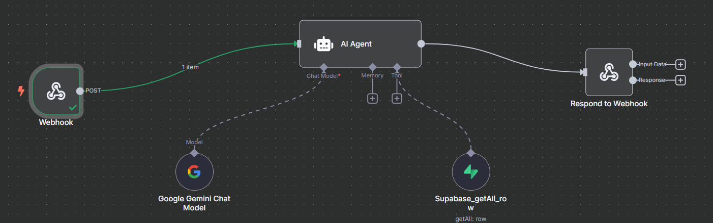
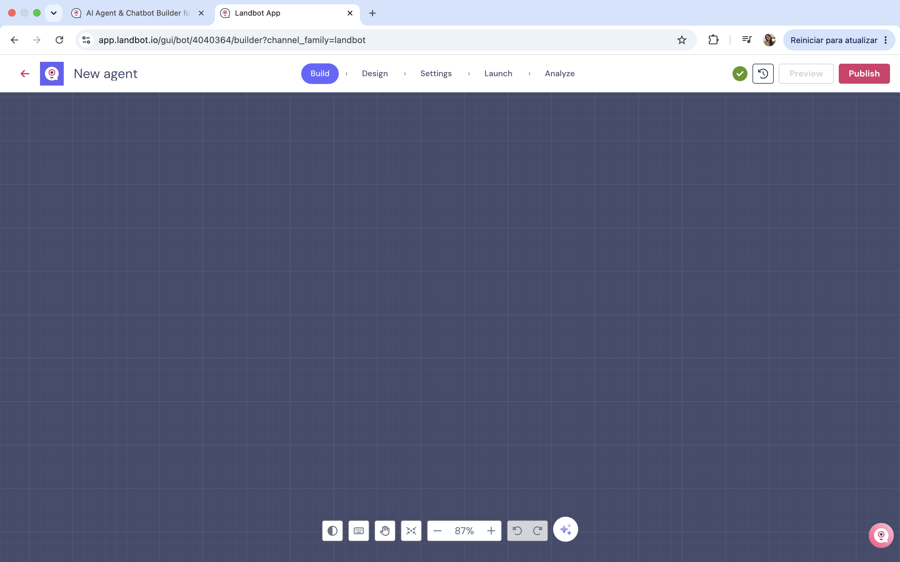

n8nSend data to workflow

Success
Error


 n8n
n8n
Workflow

Connect to your n8n workflow using its webhook trigger URL.
https://n8n-webhook.urcompany.com/webhook/landbot
Send
Add the fields to send and give each one a key.

Test
Add sample values and run a test.
Save response
Map and save response from your n8n workflow.